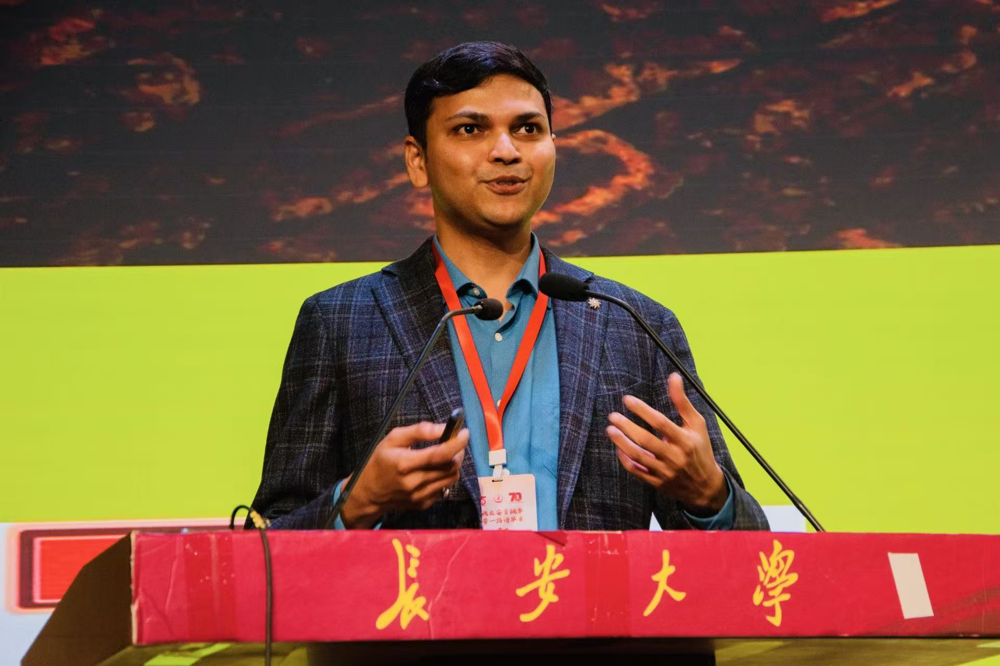
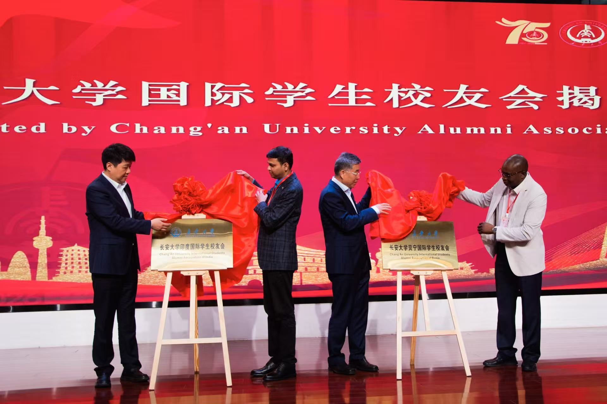
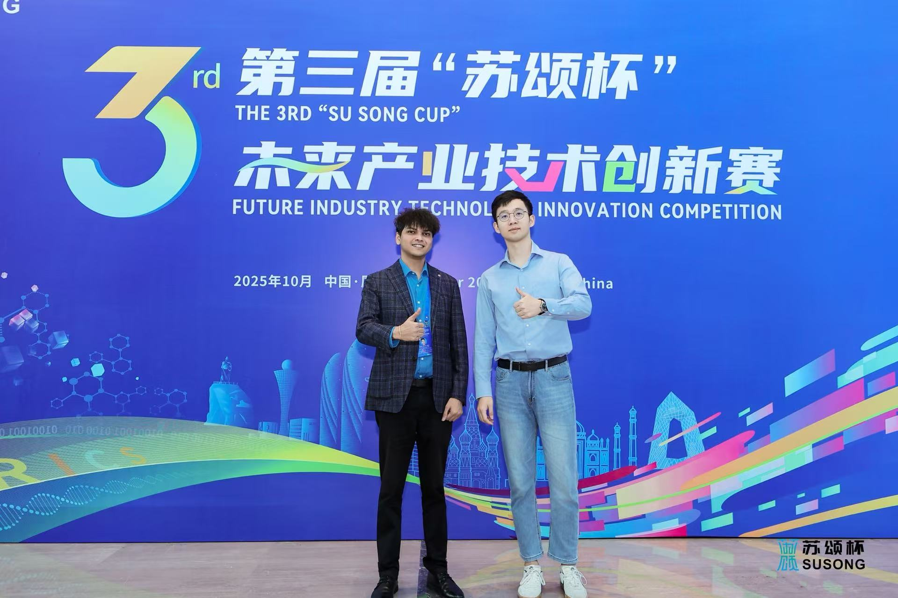
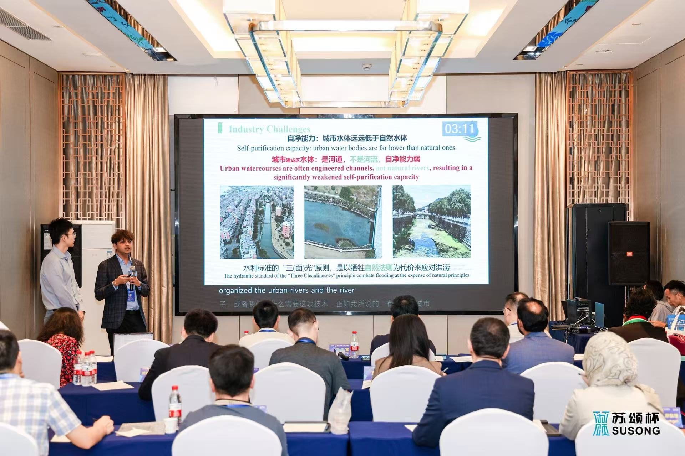
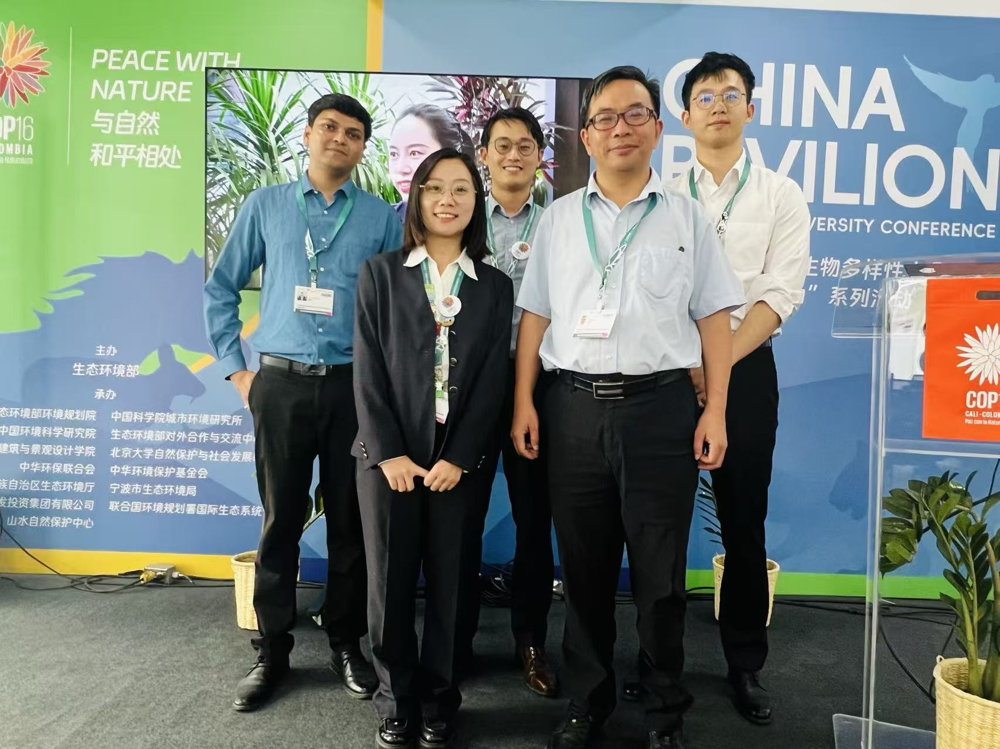
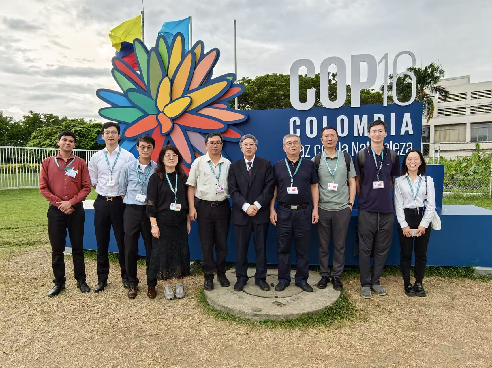

News & Events
A collection of research updates, academic events, professional milestones, and meaningful moments from my journey as a researcher.
2026
Returning to Chang’an: From Student Life to Scientific Research
I was invited as an Outstanding International Alumni to return to Chang’an University for its 75th anniversary and the 70th anniversary of international education in China. I shared my journey from studying at Chang’an University to my current work as a Postdoctoral Researcher at the Chinese Academy of Sciences, reflecting on my academic development and research journey.
I also took part in the establishment of the Chang’an University International Students Alumni Association in India as its inaugural president.


2025
Second Prize at the 3rd “Su Song Cup” BRICS Track
I was awarded Second Prize in the BRICS Track Final of the 3rd “Su Song Cup” Future Industry Innovation Competition. Together with Dr. Si-Cheng Ao and the Cuineng Tech team, I contributed to the project “Comprehensive Solution for Self-purification of Urban Water Body” , which received the Pioneer Award.
The competition provided an opportunity to connect ecological research, environmental innovation, and international collaboration beyond academia.


2024
Representing China at COP16: Peace with Nature
I joined my lab group as a member of the Chinese delegation at the 16th Conference of the Parties to the Convention on Biological Diversity (COP16) in Cali, Colombia, contributing to activities at the China Pavilion under the theme “Peace with Nature.”
I attended and contributed to meetings, discussions, and presentations, and had the opportunity to exchange ideas with researchers, policymakers, and biodiversity experts from around the world. The experience offered a valuable perspective on how countries are working collectively toward protecting biodiversity and nature.
It was a truly memorable experience at the interface of biodiversity science, environmental policy, and global conservation.

